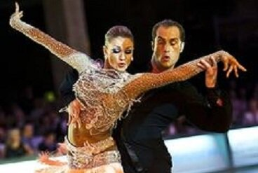
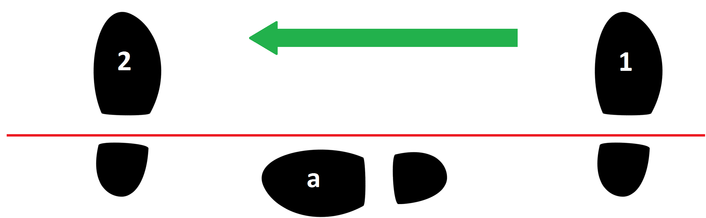

The Three Types of Voltas 
12 April 2017
No matter what level you dance, Bronze or Professional, Voltas make up a substantial part of your routine. They are one of the first figures beginners learn in Samba, but they are tough to get right, so a lot of dancers end up avoiding practicing them. However, since Voltas are one of the few figures that will stick with you as long as you dance Latin, it's best to start dancing them correctly as soon as possible and build some good fundamentals. In this article, the technique for Voltas will be covered, along with how that technique differs in the three types of Voltas.
The Travelling Voltas
These are the most basic Voltas, and probably the first you learnt. They typically travel in a straight line, to the left or the right, but may be curved ever so slightly. These are used in the Travelling Voltas, the Criss Cross Voltas, and the Shadow Travelling Voltas.
The Technique of the Feet and Legs
Start facing the Wall with weight on your LF, Left knee flexed, RF held to the side without weight, Right knee straight
| Action | Count | |
| 1 | Straighten the Left knee and rise onto the Toe of the LF. This will automatically cause the RF to draw slightly toward the LF | |
| 2 | Continue to draw the RF toward the LF, remaining high on the toe of the LF, until the RF is crossed in front of the LF, with both legs squeezed together from upper thigh to mid calf. The feet should now be turned out, so the LF is pointing DW and the RF DW against LOD | |
| 3 | Still up on the toe, swivel 1/4 to the L on the LF so the toe points down LOD and the RF points to Wall | |
| 4 | Slide the RF slightly in a direction between LOD and DW, so that there is approximately 30cm (12in) of space between the big toe of each foot, all the while maintaining the alignment of the feet, keeping both knees straight and the legs squeezed together at the upper thigh | |
| 5 | Achieve split weight between both balls of the feet. The hips should be facing DW | 1 |
| 6 | At the same time, perform these three actions: 1) lower the front heel; 2) transfer more weight into the front foot until it supports approximately 80% of your weight; 3) bend the back knee into the front knee, which will cause the front knee to bend as well, until knees are only slightly flexed but no overall lowering has occurred. | |
| 7 | Bring full weight over the RF, allowing ball of the LF to peel off the ground through the toe. | |
| 8 | Rise off the Right heel, and straighten the Right knee | |
| 8 | Extend the LF straight down LOD from its previous location, while it continues to point down LOD and the hips continue to point DW. Immediately take weight onto the LF to achieve split weight | a |
| 10 | Slide the RF straight down LOD, so that there is approximately 30cm (12in) of space between the big toe of each foot, all the while maintaining the alignment of the feet, keeping both knees straight and the legs squeezed together at the upper thigh | |
| 11 | Achieve split weight between both balls of the feet. The hips should be facing DW | 2 |
| 12 | At the same time, perform these three actions: 1) lower the front heel; 2) transfer more weight into the front foot until it supports approximately 80% of your weight; 3) bend the back knee into the front knee, which will cause the front knee to bend as well, until knees are only slightly flexed but no overall lowering has occurred. |
N.B. This does not include the technique for the bounce, hip action, or upper body, but only the feet and legs. When danced fluidly to music, the actions above will blend slightly, so that the next action will begin before the previous one was totally completed.
Common Mistakes
Two Tracks
Notice that in #4, the RF is slid not down LOD, but in a direction between LOD and DW. Then note that in #10 when the foot is crossed again, it is slid straight down LOD. The reason for this is that you need to have two tracks for your feet in Voltas, so you don't end up stumbling over them. If you are travelling straight down LOD, you need your RF to be closer to the Wall and your LF farther away from the wall, so that after you cross your RF in front, it isn't blocking your LF from taking the next step.
Just make sure the balls of your feet are on two tracks - don't worry about the heels, because when your feet pass you will be up on the toes, so your heels won't be in the way.
Alignment
If you are dancing the Voltas as above, make sure you are facing DW with your hips. Don't try to make your hips face your partner, otherwise it will tangle your legs and make it too hard to step. It is also more natural, if your RF is pointing to Wall and your LF is pointing LOD, that your hips should fall directly in the middle of those two alignments.
Timing
On the beat, you should still be high on the toes and in the knees. This will give you the remaining part of the beat to lower and cushion yourself, before having to step again. Don't immediately land into a bent knee.
The Circular Voltas
If you know the Travelling Voltas, the Circular Voltas are easy. All you have to do is dance the Travelling Voltas in a circle, where you are looking toward the centre of that circle. You can choose the size of the circle, and you can choose how many steps you want it to take you to get around the whole thing. This technique is used in the Circular Voltas, the Shadow Circular Voltas, and the Roundabout. It is also used by the Man only in the Maypole.
The technique is not different from that of the Travelling Voltas, except for the alignments and the direction of the steps. In the Travelling Voltas, the hips had to face DW throughout, but if you were to do that, you couldn't curve into a circle, so that has to be abandoned. Furthermore, you cannot maintain the feet at their alignments, and you can't take every step straight down LOD. The entire thing must curve.
In order to achieve more curve, two things must happen proportionally. The extending foot must be placed more forward, and you must pivot your body slightly as the crossing foot crosses in front (if RF, then swivel to the R, and vice versa). The degree to which these things are done determines the curve of the circle. For example, if you were to place the extending foot on one track to the side of the crossing foot, the crossing foot would then have to move forward to be able to cross in front. This would result in a slight curve. If you were to place the extending foot diagonally forward, the crossing foot would then have to compensate a great deal more, resulting in a stronger curve.
The Spot Voltas
These are essentially Circular Voltas with such a small circle that they occur on the spot. It is used by the Lady, danced Under Arm as the Man dances a Whisk or Stationary Samba Walk, by her in the Maypole, and by both dancers in the Solo Spot Voltas.
The difference between the Cricular Voltas and the Spot Voltas is this:
1) Instead of drawing the RF across the LF, you will swivel to the R on the balls of the feet until you end up with your RF crossed in front
2) When the extending leg steps to the side, it will be a small step, only about 30cm (12in) long
3) To increase the amount of turn, pivot on ball of the RF as the extending leg moves to the side, at least 1/4 turn
Because of the amount of turn, the Spot Volta is the most difficult of the three to learn, but the technique for all three types of Voltas is essentially the same.